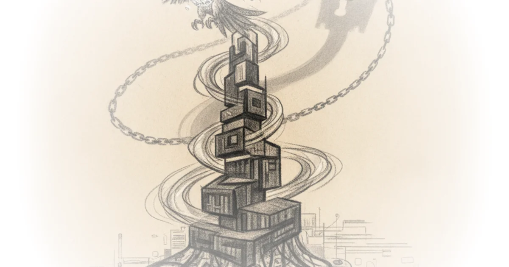

Most AI coverage obsesses over whether the current hype cycle is a bubble or a bonanza. Arvind Narayanan and Sayash Kapoor argue that this debate misses the real story: the industry's inevitable migration from selling undifferentiated computing power to engineering permanent customer lock-in. This is not just a financial forecast; it is a warning that the future of AI competition depends on how quickly labs can escape the "commodity trap" by embedding themselves so deeply into enterprise workflows that switching becomes impossible.
The Infrastructure Trap
The authors begin by dismantling the binary view of AI's profitability, noting that both critics and boosters are "looking in the wrong place — the same quarterly statements, the same short-term view." Narayanan and Kapoor suggest we should instead look at history, specifically the fate of capital-intensive infrastructure industries like railroads, electricity, and telecom. They point out a grim pattern: "infrastructure providers rarely capture the value they create."

The analysis draws a sharp parallel between today's AI labs and the fiber-optic boom of the late 1990s, where capacity exploded while prices crashed, erasing roughly $2 trillion in market capitalization. The core economic argument relies on the Bertrand paradox, which dictates that when firms sell identical products, price competition drives margins down to the cost of production. Narayanan and Kapoor write, "In equilibrium, both the supply and demand side will look very different than they do today," predicting that model inference prices will eventually collapse to marginal costs.
This framing is powerful because it treats AI not as magic, but as a classic industrial problem. If models remain interchangeable commodities, no amount of revenue growth can justify the estimated $4–8 trillion in infrastructure investment projected for the 2030s. As they starkly put it, "The labs' most likely path to durable profitability runs not through the foundation layers... but higher up the stack."
Critics might note that this historical analogy assumes AI will never achieve a level of product differentiation comparable to consumer brands like Apple, which successfully avoids commodity pricing by selling an ecosystem rather than raw specs. However, the authors counter that current benchmark data shows frontier models clustering near the top with "near-equivalence," making true differentiation elusive for now.
The public discussion over AI so far has been marked by a somewhat paradoxical dichotomy: anxiety about monopolistic concentration and runaway market power, yet a reality of low switching costs and relatively interchangeable models that seems to belie those fears.
Engineering the Moat
If selling tokens is a losing game, how do these companies survive? Narayanan and Kapoor argue they will follow the playbook of enterprise software, which sustains gross margins of 75% or more by creating "deep switching costs." The authors observe that labs are already executing this shift: "The labs' strategies to capture value by moving up the stack... have already begun."
This involves moving beyond simple API access to vertical integration and embedded deployments. The goal is to replicate the structural properties of software: zero marginal cost of reproduction and non-ephemeral value. Narayanan and Kapoor highlight that this strategy requires "the deliberate construction of switching costs and other 'moats'." They note a revealing contrast with the past, where cloud computing managed to escape the commodity trap by acquiring software-like properties such as egress fees and committed-spend agreements.
The implication is profound for enterprise buyers. We are moving toward an era where the convenience of AI comes at the price of total dependency. The authors warn that "concerns about concentration and competition are worth taking seriously now, rather than after the effects of lock-in start to materialize." This shifts the policy conversation from regulating model safety today to preventing market foreclosure tomorrow.
A counterargument worth considering is whether open-source models will eventually break these moats by providing a free, high-quality alternative that forces proprietary labs to compete on price again. The authors acknowledge this tension but suggest that for complex enterprise needs, the "managed-services lock-in" of integrated systems may outweigh the cost savings of open weights.
The Efficiency Paradox
The commentary also addresses the common booster argument that falling token prices are a sign of health due to increased volume. Narayanan and Kapoor invoke Jevons' paradox, noting that efficiency gains often lead to greater consumption, not less. However, they caution that this cannot be the sole savior of the business model. "If we assume a 5% net margin... and the need to recoup the aforementioned $4T – $8T of investment over a 5-year horizon, we end up with a requirement of $16 – $32T in annual revenue," they calculate.
This math exposes the fragility of the current buildout. The authors argue that relying on volume alone ignores the reality that "switching costs are minimal" and that provider-agnostic routing tools make it easy for customers to jump between models. Without successfully migrating up the stack, the industry faces a future where massive capital expenditure yields thin margins.
In equilibrium, competition in this equilibrium is likely to push the price of model inference toward the marginal cost of producing tokens, leaving little room for durable profits at the model layer.
The authors conclude that the transition from infrastructure builder to software vendor is not just a business pivot; it is a fundamental restructuring of power. By embedding AI into the core operations of businesses, labs can transform from utility providers into indispensable partners. This move effectively "escapes the commodity trap" but creates new risks for market competition and innovation.
Bottom Line
Narayanan and Kapoor provide a necessary corrective to the hype cycle by grounding AI economics in historical precedent and rigorous theory; their argument that infrastructure layers fail to capture value is compelling and well-supported. The piece's greatest strength is its focus on the strategic shift toward lock-in, which reframes the current "AI race" as a prelude to future market consolidation. However, the analysis may underestimate how quickly open-source innovation could disrupt these emerging moats before they fully solidify.